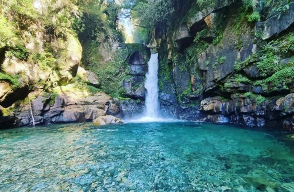
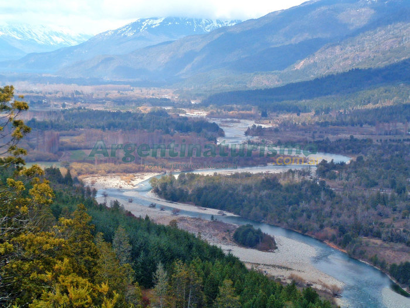
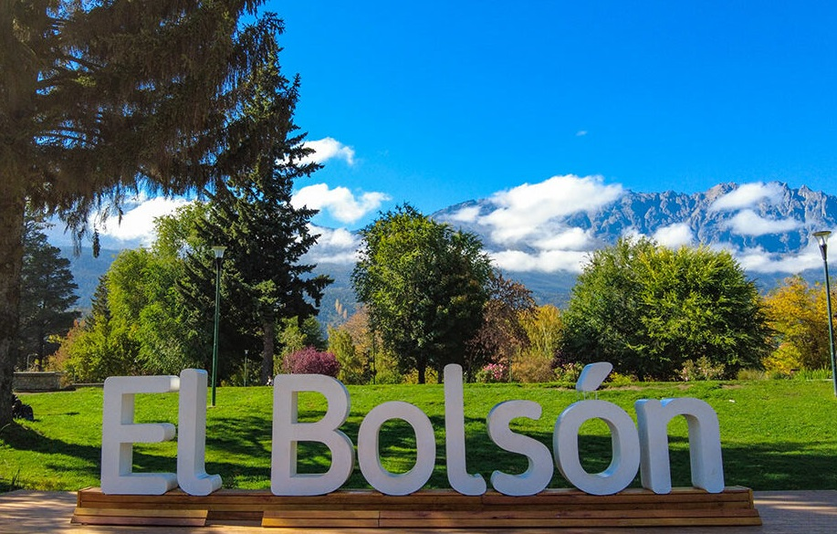
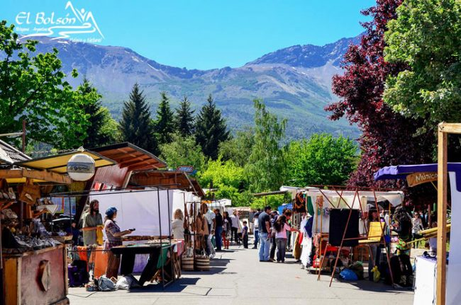
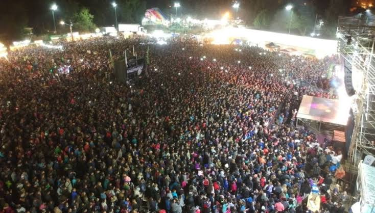

Naturaleza y Aventura
Desde el emblemático Cajón del Azul hasta las imponentes vistas del Cerro Piltriquitrón y senderos como la Cascada Escondida. El Bolsón alberga la red de refugios de montaña más grande de Sudamérica.


El corazón de la Comarca Andina en la Patagonia Argentina
El Bolsón es una pintoresca ciudad andina ubicada al pie del majestuoso Cerro Piltriquitrón, en la provincia de Río Negro. Famosa por su espíritu bohemio, sus ferias artesanales, su gastronomía orgánica y su entorno rodeado de bosques, ríos y montañas. Un destino ideal para desconectar y disfrutar de la naturaleza en cualquier época del año.

Reconocida por su espíritu bohemio y su histórica Feria Regional de artesanos en la Plaza Pagano, la ciudad es también un paraíso para los amantes del aire libre: alberga la red de refugios de montaña más grande de Sudamérica, conectada por senderos que recorren ríos turquesas, bosques nativos y cascadas inolvidables.
Desde el emblemático Cajón del Azul hasta las imponentes vistas del Cerro Piltriquitrón y senderos como la Cascada Escondida. El Bolsón alberga la red de refugios de montaña más grande de Sudamérica.


Disfrutá de una agenda cultural y social vibrante durante todo el año, encabezada por la icónica Fiesta Nacional del Lúpulo en verano y la tradicional Feria Regional en la Plaza Pagano. Además, la ciudad ofrece espectáculos callejeros, festivales gastronómicos dedicados al chocolate y las frutas finas, e imponentes encuentros deportivos como competencias de trail running y exhibiciones de parapente en el Cerro Piltriquitrón

